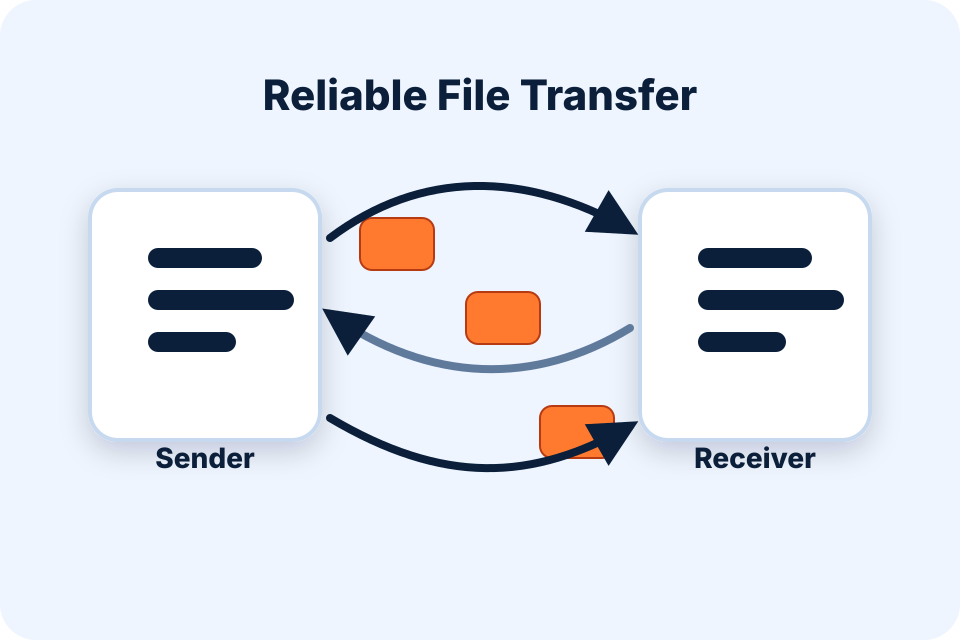
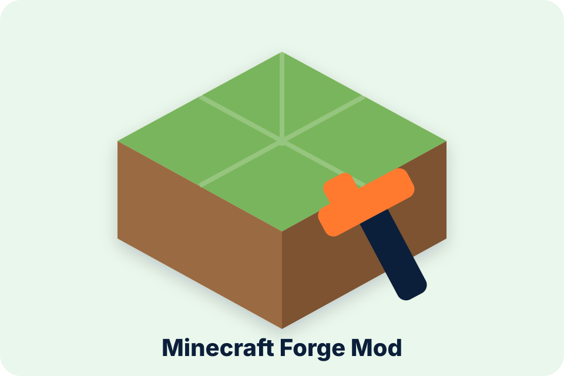

CS 3240 Software Engineering
HooTasks
Created a student-team task dashboard with projects, assignments, deadlines, comments, and status tracking.
View projectI am a fourth-year Computer Science student at the University of Virginia. My work sits between building usable tools and understanding the hidden structures that make those tools reliable.
I want to be known as someone who can provide a unique service: noticing a problem, studying the system around it, building something useful, and explaining the result clearly. This portfolio is organized around that pattern.
These artifacts are not meant to be a random display case. Each one shows a different angle of how I think: building applications, questioning systems, organizing data, and practicing deliberately.
Created a student-team task dashboard with projects, assignments, deadlines, comments, and status tracking.
View project
Designed a Flask/MySQL club catalog where students browse, save, and request to join organizations while officers manage clubs, events, and members.
View project
Analyzed weaknesses in login behavior, input handling, and session management, then explained practical ways to reduce the risk.
View project
Implemented a reliable transfer process with packets, sequence numbers, acknowledgments, retries, and reconstruction.
View project
Built a recommendation experiment that ranked movie suggestions based on preferences, features, scoring, and evaluation.
View project
Added a custom ore, tool set, and crafting recipes while learning how a mod fits inside an existing game structure.
View projectI care about whether something helps a real person do something more clearly, faster, or with less confusion.
I do not want to stop at the interface. Databases, networks, security assumptions, and architecture are part of the work.
The best technical work loses value if nobody can understand what was built, why it matters, or where its limits are.